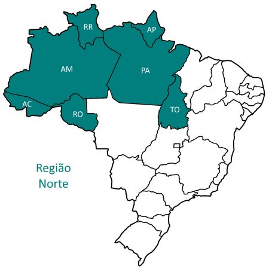

|  | A região norte é formada por 7 unidades da federação e suas respectivas capitais: Acre - Rio Branco (AC) Amapá - Macapá (AP) Amazonas - Manaus (AM) Pará - Belém (PA) Rondônia - Porto Velho (RO) Roraima - Boa Vistas (RR) Tocantins - Palmas (TO) O norte do Brasil faz fronteira com vários países como Bolívia, Peru, Colômbia, Venezuela, Guiana, Suriname e a Guiana Francesa e o Pará é o estado mais populoso, com 8.664.306 habitantes, sendo um grande destino turístico para estrangeiros. No entanto, é a região menos habitada mesmo sendo a maior em extensão. |
|---|---|